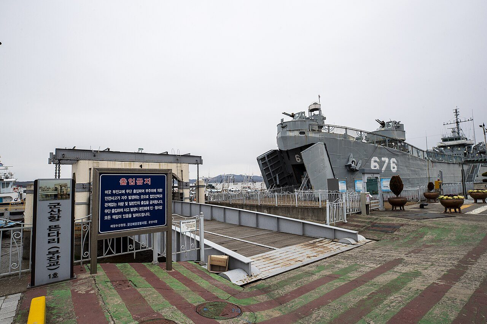
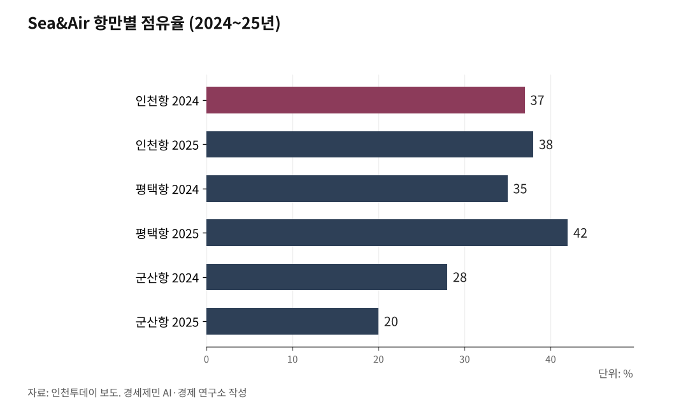

[해양 AI 융복합①] 공항 옆 인천항이 200㎞ 밖 군산항보다 늦는 까닭
바닷길로 와서 하늘길로 나가는 화물, 인천항 점유율 평택에 밀려
20년 전 학술논문이 짚은 취약점, 인천항은 AI로 메우겠다고 나서
인천항은 인천공항에서 가장 가까운 항만이다. 그런데 화물이 공항에 닿는 시간은 200㎞ 떨어진 군산항보다 늦다. 인천항만공사가 왜 지금 AI를 꺼내 들었는지 사실로 짚는다.

인천항만공사는 6월 30일 인천항 현장 전반에 AI와 신기술을 도입한다고 밝혔다. 앞서 5월 14일에는 AI 전환 중장기 전략 수립에 들어갔다. 김순철 경영부사장은 AI가 항만 운영의 효율과 안전을 높이는 핵심 수단이라고 말했다.
발표한 기술 가운데 첫머리에 놓인 것이 물류 경로 안내다. 야적장에서 인천공항 물류창고까지 이어지는 길을 AI가 실시간으로 짜 준다.
파일 1절_인천과 홍콩을 오가는 대한항공 화물기_출처_위키미디어커먼즈 LN9267_260806.jpg
출처 위키미디어 공용. 촬영 LN9267. CC BY-SA 4.0
캡션 인천과 홍콩을 오가는 대한항공 화물기. 바닷길로 들어온 화물은 인천공항에서 하늘길로 갈아탄다(촬영 LN9267, CC BY-SA 4.0)
1. 바다로 와서 하늘로 나간다
이 경로에는 이름이 있다. 해상·항공 복합운송, 줄여서 Sea&Air다.
김태승·원동욱·윤정원은 한국항만경제학회지에 실은 논문에서 이를 항공운송의 신속성과 해상운송의 저렴성을 결합한 틈새시장으로 규정했다. 중국에서 만든 상품을 한·중 카페리로 한국 항만에 들여온 뒤, 인천공항에서 미국과 유럽으로 내보내는 방식이다.
핵심 물량은 알리익스프레스와 테무, 쉬인 같은 중국 전자상거래 플랫폼 화물이다. 화주가 이 경로를 고르는 이유는 일반 컨테이너선보다 운반 시간이 짧기 때문이다.
2025년 인천공항 Sea&Air 화물은 11만3000톤으로 전년 11만8000톤보다 4.2% 줄었다. 코로나19 시기 이후 처음 감소했다. 미국이 중국발 전자상거래 물품에 관세를 매긴 영향이 크다는 분석이 나온다.
파일 2절_인천본부세관 청사_출처_위키미디어커먼즈 Jjw_260806.jpg
출처 위키미디어 공용. 촬영 Jjw. CC BY-SA 4.0. 2025.5.2.
캡션 인천본부세관 청사. 보세구역을 빠져나가는 시간이 인천항과 군산항의 차이를 갈랐다(촬영 Jjw, CC BY-SA 4.0)

2. 공항 옆인데 2분 늦는다
인천공항공사가 2024년 항만별 운송 시간을 조사했다. 중국을 떠난 화물이 인천공항에 닿기까지 인천항은 14시간 22분, 군산항은 14시간 20분 걸렸다.
군산항은 인천공항에서 200㎞ 떨어져 있어 육상 운송에만 3시간가량 더 쓴다. 그런데도 2분 빨랐다. 인천 항만물류업계 관계자는 선박 스케줄에 따라 군산항이 인천항보다 화물을 더 빨리 처리할 수 있다고 말했다.
차이는 항만 안에서 벌어졌다. 카페리가 항만에 닿은 뒤 보세구역을 빠져나갈 때까지, 군산항이 인천항보다 1시간 37분 빨랐다.
보세구역은 관세를 매기기 전 화물을 세워 두는 구역이다. 인천항은 한·중 카페리 항로가 8개로 군산항 1개, 평택항 5개보다 많다. 그 입지 우위를 보세구역 통과 시간이 상쇄했다.
파일 3절_인천항 갑문과 부두_출처_인천 중구청_260806.jpg
출처 인천 중구청. 공공누리 제1유형
캡션 인천항 갑문과 부두. 한·중 카페리 항로가 8개로 가장 많은 항만이다(제공 인천 중구청, 공공누리 제1유형)
3. 점유율 1위를 평택에 내줬다
인천공항 Sea&Air 화물의 항만별 점유율이 2025년 뒤바뀌었다. 평택항 42%, 인천항 38%, 군산항 20%다. 2024년에는 인천항 37%, 평택항 35%, 군산항 28%였다.
화물이 줄어서가 아니다. 인천항 한·중 카페리 컨테이너 물동량은 2025년 45만7541TEU로 전년보다 3.0% 늘었다. TEU는 길이 6m짜리 컨테이너 한 개를 세는 단위다.
인천공항 쪽 처리 능력도 약해졌다. 여러 화주 화물을 한 컨테이너에 함께 싣는 방식을 LCL이라 하는데, 카페리로 오는 전자상거래 화물은 대부분 이 형태다.
LCL 처리 업체는 2~3년 전 15개 이상에서 2025년 9월 8개로 줄었다. 40피트 컨테이너 한 개 처리 비용이 96만원에서 80만원 중반대로 떨어지는 동안 인건비는 올랐다.
업체가 줄자 처리 시간이 길어졌다. 일주일 이상 걸리는 경우가 많고, 15일 넘게 밀리기도 한다.
파일 4절_인천항 제3부두 출입구_출처_위키미디어커먼즈 Alvis Jean_260806.jpg
출처 위키미디어 공용. 촬영 Alvis Jean. CC0 1.0. 2024.4.7.
캡션 인천항 제3부두 출입구. 항만과 공항, 도시 자료를 잇는 접점이다
4. 항만·공항·도시 자료를 잇는다
인천항만공사는 '3D AI 엔진'을 구축한다. 폐쇄회로 화면과 드론 같은 항만 정보에 인천국제공항과 인천시 자료를 연계한다.
이 엔진은 화물차 기사에게 야적장에서 공항 물류창고까지 최적 경로를 실시간으로 안내한다. 세 기관이 따로 쥐고 있던 자료를 하나로 잇는 방식이다.
도로 관리에는 AI 도로관리 로봇카를 투입한다. 로봇카는 항만 도로를 상시 순회하며 파여 생긴 구멍, 곧 포트홀을 찾는다. 20㎝ 이하는 발견 즉시 20분 안에 스스로 메운다.
항만 안 태양광 발전소에는 '비전언어모델(VLM) AI'를 배치한다. 사진을 보고 그 상황을 글처럼 풀어 이해하는 AI다. 가스 보관시설에는 냄새를 읽는 '전자지능 코'를 넣는다.
파일 5절_인천항 부두와 도심 전경_출처_위키미디어커먼즈 퍼블릭도메인_260806.jpg
출처 위키미디어 공용. 퍼블릭 도메인
캡션 인천항 부두와 도심 전경. 2006년 논문은 이 항만의 수요 안정성을 낮게 봤다
5. 20년 전 논문이 짚은 취약점
앞서 언급한 2006년 논문은 Sea&Air 경쟁력을 시간과 비용 모두에서 충분하다고 봤다. 다만 기술 조건과 수송 환경 변화 측면에서는 안정성이 높지 않다고 진단했다.
위협요인으로는 두 가지를 꼽았다. 항공기술이 발전해 중소도시 직항 노선이 늘어나는 흐름, 그리고 국제 항공사들이 중국 항공사와 손잡는 전략적 제휴다.
연구진은 대안으로 3단계 발전 전략을 제시했다. 환적화물 중심에서 부가가치 창출형으로, 나아가 동북아 공급망 허브형으로 나아가야 수요가 안정된다고 봤다.
인천항만공사는 7월 15일부터 이틀간 송도컨벤시아에서 제7회 인천국제해양포럼을 열었다. 온·오프라인 누적 참가자는 3,106명으로 집계됐다.
웨이 임 얍 싱가포르대 경영학부 부교수는 데이터 거버넌스를 세워야 한다고 진단했다. 이해관계자들은 방대한 자료를 갖고 있지만 정보가 조각나 통합되지 못한다.
웨이 임 얍 부교수는 이 '데이터 사일로' 현상부터 풀어야 AI 효율이 오른다고 지적했다. 인천항만공사가 항만과 공항, 시 자료를 하나로 잇겠다고 밝힌 것도 같은 문제를 향한다.
[사진 위치]
· 소제목 1 앞: 인천공항 자유무역지역 Sea&Air 화물 전용 작업장(인천공항공사 제공)
· 소제목 3 앞: 인천 신항 컨테이너부두 전경(인천항만공사 제공)
· 소제목 4 앞: 인천항 AI·신기술 도입 개요도(인천항만공사 제공)
참고문헌
· 김태승·원동욱·윤정원, 「환황해권 Sea&Air 수송의 발전 가능성 전망」, 『한국항만경제학회지』 제22집 제3호, 한국항만경제학회, 2006.9., 189~207쪽, https://www.dbpia.co.kr/journal/articleDetail?nodeId=NODE00801843
· "인천항 Sea&Air 물동량 1위 평택항에 뺏겨···인천공항 초근접 장점 무색", 인천투데이, 2026.6.8., https://www.incheontoday.com/news/articleView.html?idxno=319859
· "인천항, AI·신소재 입고 '스마트 항만' 대전환", Businesskorea, 2026.6.30., https://www.businesskorea.co.kr/news/articleView.html?idxno=272193
· "'컨테이너만 옮기던 항만서 AI가 의사결정까지'…IPA, 'AI 항만 대전환' 본격 착수", 해사신문, 2026.5.17., http://www.haesanews.com/news/articleView.html?idxno=148064
· "AI가 바꿀 해양의 미래…제7회 인천국제해양포럼 성황리 폐막", 해사신문, 2026.7.20., http://www.haesanews.com/news/articleView.html?idxno=149421
· "로봇이 짐 나르고 데이터가 항만 움직인다…AI 해양시대 성큼", 아주경제, 2026.7.15., https://www.ajunews.com/view/20260715163143669
※ 이 글은 AI 프로그램 클로드를 활용해 작성했습니다.
━━━━━━━━━━━━━━━━━━━━━━━━━━━━━━━━━━━━━━━━
[연구용 보관 메모]
원본 위치 C:\경세제민연구소\김박사AI\글쓰기&영상\해양\해양AI융복합_연재\1편_인천항SeaAir_260724\
해양AI융복합_인천항SeaAir_260724.txt
※ 2026년 8월 29일 폴더 이름을 해양AI융합에서 해양AI융복합_연재로 바꿨다.
옛 경로 AI\AI시대\해양AI융복합은 2026년 8월 23일에 지웠다. 다시 만들지 않는다.
원고 파일명도 폴더명에 맞춰 인천항AI대전환에서 인천항SeaAir로 바꿨다.
발행 매체 페이스북 연재
사진 표기 2026년 8월 27일 소장님 지시로 사진 표기와 캡션을 말미에서 본문 안으로 옮겼다.
공통지침 제2부 제23항 라의2목이 그것이다.
자기표절 주의 이 기사에 쓴 표현은 논문에 그대로 옮기지 않는다.
논문_SeaAir_복합운송 트랙을 진행할 때 대조표를 먼저 만든다.
사진 출처
· [대표사진] Korea Tourism Organiazation (한국관광공사), "Pier of Port of Gunsan 02.jpg", 위키미디어 공용, 공공누리 제1유형, https://commons.wikimedia.org/wiki/File:Pier_of_Port_of_Gunsan_02.jpg
※ 이 기사는 인공지능을 활용해 작성했습니다.
관련기사
- [해양 AI 융복합②] 광양항, 정부 '피지컬 AI 항만' 첫 실증 거점 됐다
- [해양 AI 융복합③] 부산항만공사, 국내 첫 'AI 항만' 전환 계획 내놨다
- [해양 AI 융복합④] 항만 첫 데이터센터 품는 인천 신항, 착공은 또 2027년 하반기 뒤로
- [해양 AI 융복합⑤] 자율운항선박, 배보다 먼저 온 국제 규범
저작권자 © AI경세제민 무단전재 및 재배포, AI학습 및 활용 금지